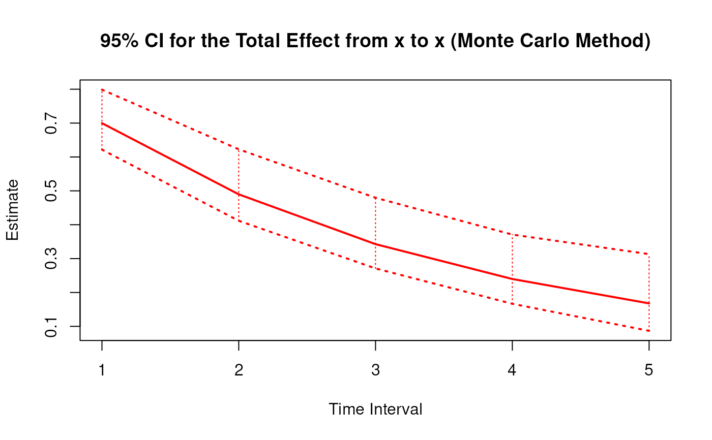
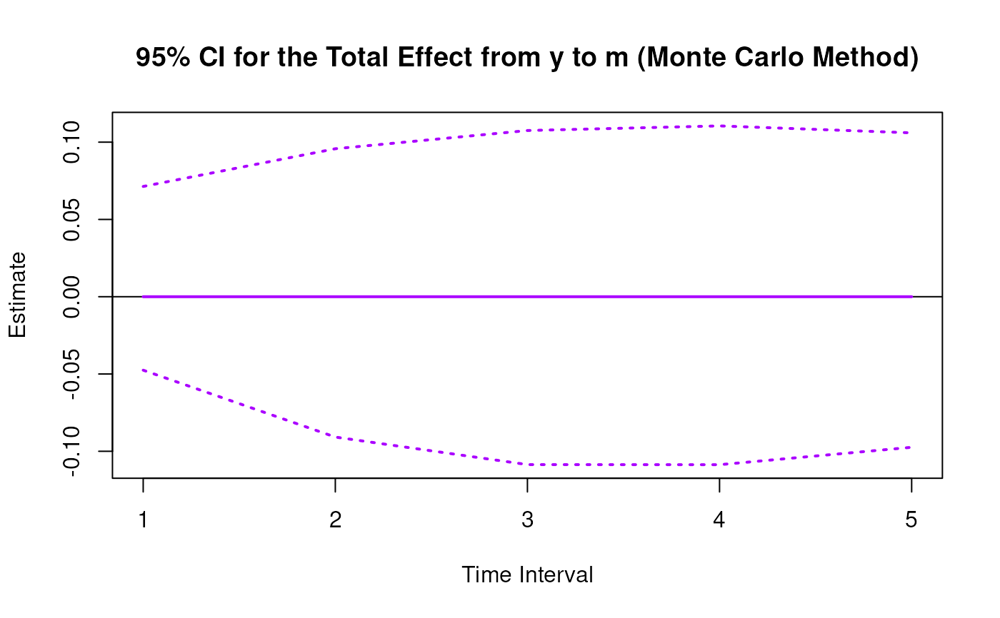
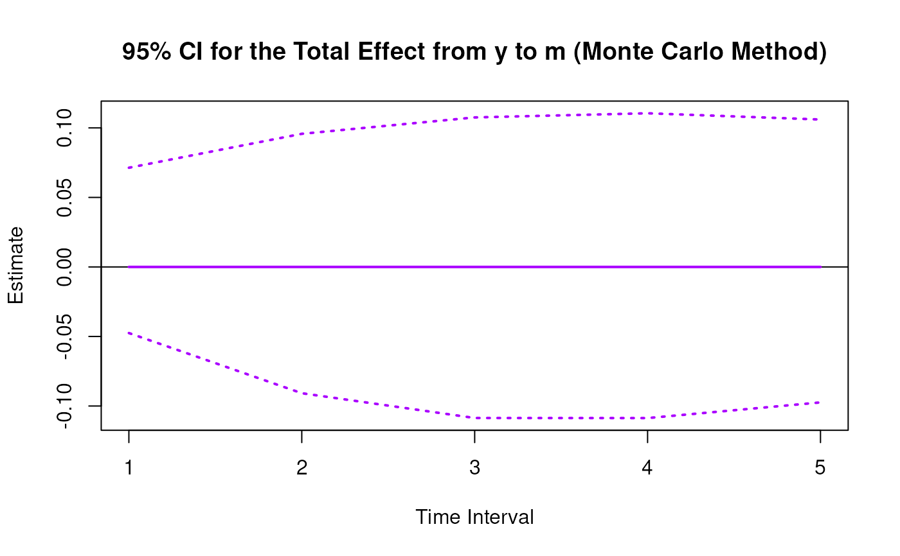

Monte Carlo Sampling Distribution for the Elements of the Matrix of Lagged Coefficients Over a Specific Time Interval or a Range of Time Intervals
Source:R/cTMed-mc-beta.R
MCBeta.RdThis function generates a Monte Carlo method sampling distribution for the elements of the matrix of lagged coefficients \(\boldsymbol{\beta}\) over a specific time interval \(\Delta t\) or a range of time intervals using the first-order stochastic differential equation model drift matrix \(\boldsymbol{\Phi}\).
Arguments
- phi
Numeric matrix. The drift matrix (\(\boldsymbol{\Phi}\)).
phishould have row and column names pertaining to the variables in the system.- vcov_phi_vec
Numeric matrix. The sampling variance-covariance matrix of \(\mathrm{vec} \left( \boldsymbol{\Phi} \right)\).
- delta_t
Numeric. Time interval (\(\Delta t\)).
- R
Positive integer. Number of replications.
- test_phi
Logical. If
test_phi = TRUE, the function tests the stability of the generated drift matrix \(\boldsymbol{\Phi}\). If the test returnsFALSE, the function generates a new drift matrix \(\boldsymbol{\Phi}\) and runs the test recursively until the test returnsTRUE.- ncores
Positive integer. Number of cores to use. If
ncores = NULL, use a single core. Consider using multiple cores when number of replicationsRis a large value.- seed
Random seed.
Value
Returns an object
of class ctmedmc which is a list with the following elements:
- call
Function call.
- args
Function arguments.
- fun
Function used ("MCBeta").
- output
A list with length of
length(delta_t).
Each element in the output list has the following elements:
- est
A vector of total, direct, and indirect effects.
- thetahatstar
A matrix of Monte Carlo total, direct, and indirect effects.
Details
See Total().
Monte Carlo Method
Let \(\boldsymbol{\theta}\) be \(\mathrm{vec} \left( \boldsymbol{\Phi} \right)\), that is, the elements of the \(\boldsymbol{\Phi}\) matrix in vector form sorted column-wise. Let \(\hat{\boldsymbol{\theta}}\) be \(\mathrm{vec} \left( \hat{\boldsymbol{\Phi}} \right)\). Based on the asymptotic properties of maximum likelihood estimators, we can assume that estimators are normally distributed around the population parameters. $$ \hat{\boldsymbol{\theta}} \sim \mathcal{N} \left( \boldsymbol{\theta}, \mathbb{V} \left( \hat{\boldsymbol{\theta}} \right) \right) $$ Using this distributional assumption, a sampling distribution of \(\hat{\boldsymbol{\theta}}\) which we refer to as \(\hat{\boldsymbol{\theta}}^{\ast}\) can be generated by replacing the population parameters with sample estimates, that is, $$ \hat{\boldsymbol{\theta}}^{\ast} \sim \mathcal{N} \left( \hat{\boldsymbol{\theta}}, \hat{\mathbb{V}} \left( \hat{\boldsymbol{\theta}} \right) \right) . $$ Let \(\mathbf{g} \left( \hat{\boldsymbol{\theta}} \right)\) be a parameter that is a function of the estimated parameters. A sampling distribution of \(\mathbf{g} \left( \hat{\boldsymbol{\theta}} \right)\) , which we refer to as \(\mathbf{g} \left( \hat{\boldsymbol{\theta}}^{\ast} \right)\) , can be generated by using the simulated estimates to calculate \(\mathbf{g}\). The standard deviations of the simulated estimates are the standard errors. Percentiles corresponding to \(100 \left( 1 - \alpha \right) \%\) are the confidence intervals.
Linear Stochastic Differential Equation Model
The measurement model is given by $$ \mathbf{y}_{i, t} = \boldsymbol{\nu} + \boldsymbol{\Lambda} \boldsymbol{\eta}_{i, t} + \boldsymbol{\varepsilon}_{i, t}, \quad \mathrm{with} \quad \boldsymbol{\varepsilon}_{i, t} \sim \mathcal{N} \left( \mathbf{0}, \boldsymbol{\Theta} \right) $$ where \(\mathbf{y}_{i, t}\), \(\boldsymbol{\eta}_{i, t}\), and \(\boldsymbol{\varepsilon}_{i, t}\) are random variables and \(\boldsymbol{\nu}\), \(\boldsymbol{\Lambda}\), and \(\boldsymbol{\Theta}\) are model parameters. \(\mathbf{y}_{i, t}\) represents a vector of observed random variables, \(\boldsymbol{\eta}_{i, t}\) a vector of latent random variables, and \(\boldsymbol{\varepsilon}_{i, t}\) a vector of random measurement errors, at time \(t\) and individual \(i\). \(\boldsymbol{\nu}\) denotes a vector of intercepts, \(\boldsymbol{\Lambda}\) a matrix of factor loadings, and \(\boldsymbol{\Theta}\) the covariance matrix of \(\boldsymbol{\varepsilon}\).
An alternative representation of the measurement error is given by $$ \boldsymbol{\varepsilon}_{i, t} = \boldsymbol{\Theta}^{\frac{1}{2}} \mathbf{z}_{i, t}, \quad \mathrm{with} \quad \mathbf{z}_{i, t} \sim \mathcal{N} \left( \mathbf{0}, \mathbf{I} \right) $$ where \(\mathbf{z}_{i, t}\) is a vector of independent standard normal random variables and \( \left( \boldsymbol{\Theta}^{\frac{1}{2}} \right) \left( \boldsymbol{\Theta}^{\frac{1}{2}} \right)^{\prime} = \boldsymbol{\Theta} . \)
The dynamic structure is given by $$ \mathrm{d} \boldsymbol{\eta}_{i, t} = \left( \boldsymbol{\iota} + \boldsymbol{\Phi} \boldsymbol{\eta}_{i, t} \right) \mathrm{d}t + \boldsymbol{\Sigma}^{\frac{1}{2}} \mathrm{d} \mathbf{W}_{i, t} $$ where \(\boldsymbol{\iota}\) is a term which is unobserved and constant over time, \(\boldsymbol{\Phi}\) is the drift matrix which represents the rate of change of the solution in the absence of any random fluctuations, \(\boldsymbol{\Sigma}\) is the matrix of volatility or randomness in the process, and \(\mathrm{d}\boldsymbol{W}\) is a Wiener process or Brownian motion, which represents random fluctuations.
References
Bollen, K. A. (1987). Total, direct, and indirect effects in structural equation models. Sociological Methodology, 17, 37. doi:10.2307/271028
Deboeck, P. R., & Preacher, K. J. (2015). No need to be discrete: A method for continuous time mediation analysis. Structural Equation Modeling: A Multidisciplinary Journal, 23 (1), 61–75. doi:10.1080/10705511.2014.973960
Ryan, O., & Hamaker, E. L. (2021). Time to intervene: A continuous-time approach to network analysis and centrality. Psychometrika, 87 (1), 214–252. doi:10.1007/s11336-021-09767-0
See also
Other Continuous Time Mediation Functions:
DeltaBeta(),
DeltaIndirectCentral(),
DeltaMed(),
DeltaTotalCentral(),
Direct(),
Indirect(),
IndirectCentral(),
MCIndirectCentral(),
MCMed(),
MCPhi(),
MCTotalCentral(),
Med(),
PosteriorBeta(),
PosteriorIndirectCentral(),
PosteriorMed(),
PosteriorPhi(),
PosteriorTotalCentral(),
Total(),
TotalCentral(),
Trajectory()
Examples
set.seed(42)
phi <- matrix(
data = c(
-0.357, 0.771, -0.450,
0.0, -0.511, 0.729,
0, 0, -0.693
),
nrow = 3
)
colnames(phi) <- rownames(phi) <- c("x", "m", "y")
vcov_phi_vec <- matrix(
data = c(
0.002704274, -0.001475275, 0.000949122,
-0.001619422, 0.000885122, -0.000569404,
0.00085493, -0.000465824, 0.000297815,
-0.001475275, 0.004428442, -0.002642303,
0.000980573, -0.00271817, 0.001618805,
-0.000586921, 0.001478421, -0.000871547,
0.000949122, -0.002642303, 0.006402668,
-0.000697798, 0.001813471, -0.004043138,
0.000463086, -0.001120949, 0.002271711,
-0.001619422, 0.000980573, -0.000697798,
0.002079286, -0.001152501, 0.000753,
-0.001528701, 0.000820587, -0.000517524,
0.000885122, -0.00271817, 0.001813471,
-0.001152501, 0.00342605, -0.002075005,
0.000899165, -0.002532849, 0.001475579,
-0.000569404, 0.001618805, -0.004043138,
0.000753, -0.002075005, 0.004984032,
-0.000622255, 0.001634917, -0.003705661,
0.00085493, -0.000586921, 0.000463086,
-0.001528701, 0.000899165, -0.000622255,
0.002060076, -0.001096684, 0.000686386,
-0.000465824, 0.001478421, -0.001120949,
0.000820587, -0.002532849, 0.001634917,
-0.001096684, 0.003328692, -0.001926088,
0.000297815, -0.000871547, 0.002271711,
-0.000517524, 0.001475579, -0.003705661,
0.000686386, -0.001926088, 0.004726235
),
nrow = 9
)
# Specific time interval ----------------------------------------------------
MCBeta(
phi = phi,
vcov_phi_vec = vcov_phi_vec,
delta_t = 1,
R = 100L # use a large value for R in actual research
)
#>
#> Total, Direct, and Indirect Effects
#>
#> $`1`
#> interval est se R 2.5% 97.5%
#> from x to x 1 0.6998 0.0243 100 0.6454 0.7396
#> from x to m 1 0.5000 0.0326 100 0.4429 0.5685
#> from x to y 1 -0.1000 0.0342 100 -0.1666 -0.0440
#> from m to x 1 0.0000 0.0238 100 -0.0432 0.0497
#> from m to m 1 0.5999 0.0249 100 0.5503 0.6438
#> from m to y 1 0.3998 0.0287 100 0.3381 0.4388
#> from y to x 1 0.0000 0.0282 100 -0.0597 0.0540
#> from y to m 1 0.0000 0.0264 100 -0.0448 0.0560
#> from y to y 1 0.5001 0.0343 100 0.4404 0.5758
#>
# Range of time intervals ---------------------------------------------------
mc <- MCBeta(
phi = phi,
vcov_phi_vec = vcov_phi_vec,
delta_t = 1:5,
R = 100L # use a large value for R in actual research
)
plot(mc)



 

 # Methods -------------------------------------------------------------------
# MCBeta has a number of methods including
# print, summary, confint, and plot
print(mc)
#>
#> Total, Direct, and Indirect Effects
#>
#> $`1`
#> interval est se R 2.5% 97.5%
#> from x to x 1 0.6998 0.0298 100 0.6519 0.7631
#> from x to m 1 0.5000 0.0296 100 0.4424 0.5529
#> from x to y 1 -0.1000 0.0340 100 -0.1648 -0.0320
#> from m to x 1 0.0000 0.0212 100 -0.0445 0.0355
#> from m to m 1 0.5999 0.0259 100 0.5520 0.6485
#> from m to y 1 0.3998 0.0269 100 0.3375 0.4385
#> from y to x 1 0.0000 0.0232 100 -0.0423 0.0434
#> from y to m 1 0.0000 0.0290 100 -0.0523 0.0603
#> from y to y 1 0.5001 0.0279 100 0.4601 0.5604
#>
#> $`2`
#> interval est se R 2.5% 97.5%
#> from x to x 2 0.4897 0.0391 100 0.4339 0.5782
#> from x to m 2 0.6499 0.0385 100 0.5643 0.7187
#> from x to y 2 0.0799 0.0352 100 0.0110 0.1542
#> from m to x 2 0.0000 0.0252 100 -0.0505 0.0421
#> from m to m 2 0.3599 0.0292 100 0.3052 0.4144
#> from m to y 2 0.4398 0.0238 100 0.3923 0.4778
#> from y to x 2 0.0000 0.0278 100 -0.0526 0.0527
#> from y to m 2 0.0000 0.0343 100 -0.0578 0.0724
#> from y to y 2 0.2501 0.0287 100 0.2131 0.3086
#>
#> $`3`
#> interval est se R 2.5% 97.5%
#> from x to x 3 0.3427 0.0405 100 0.2886 0.4369
#> from x to m 3 0.6347 0.0445 100 0.5488 0.7374
#> from x to y 3 0.2508 0.0337 100 0.1884 0.3100
#> from m to x 3 0.0000 0.0253 100 -0.0502 0.0449
#> from m to m 3 0.2159 0.0310 100 0.1587 0.2809
#> from m to y 3 0.3638 0.0213 100 0.3269 0.4010
#> from y to x 3 0.0000 0.0253 100 -0.0474 0.0477
#> from y to m 3 0.0000 0.0344 100 -0.0597 0.0687
#> from y to y 3 0.1251 0.0255 100 0.0928 0.1836
#>
#> $`4`
#> interval est se R 2.5% 97.5%
#> from x to x 4 0.2398 0.0383 100 0.1923 0.3245
#> from x to m 4 0.5521 0.0480 100 0.4786 0.6840
#> from x to y 4 0.3449 0.0324 100 0.2823 0.3989
#> from m to x 4 0.0000 0.0241 100 -0.0472 0.0459
#> from m to m 4 0.1295 0.0325 100 0.0824 0.2003
#> from m to y 4 0.2683 0.0213 100 0.2247 0.3098
#> from y to x 4 0.0000 0.0207 100 -0.0396 0.0383
#> from y to m 4 0.0000 0.0327 100 -0.0577 0.0580
#> from y to y 4 0.0625 0.0230 100 0.0306 0.1126
#>
#> $`5`
#> interval est se R 2.5% 97.5%
#> from x to x 5 0.1678 0.0351 100 0.1186 0.2492
#> from x to m 5 0.4511 0.0490 100 0.3896 0.5892
#> from x to y 5 0.3693 0.0325 100 0.3091 0.4402
#> from m to x 5 0.0000 0.0219 100 -0.0435 0.0409
#> from m to m 5 0.0777 0.0327 100 0.0331 0.1456
#> from m to y 5 0.1859 0.0218 100 0.1439 0.2318
#> from y to x 5 0.0000 0.0161 100 -0.0319 0.0292
#> from y to m 5 0.0000 0.0296 100 -0.0545 0.0522
#> from y to y 5 0.0313 0.0217 100 -0.0007 0.0789
#>
summary(mc)
#> effect interval est se R 2.5% 97.5%
#> 1 from x to x 1 0.69977250 0.02980826 100 0.6519089361 0.76308341
#> 2 from x to m 1 0.50003412 0.02955790 100 0.4424164796 0.55293851
#> 3 from x to y 1 -0.10003837 0.03395899 100 -0.1647602454 -0.03201140
#> 4 from m to x 1 0.00000000 0.02116540 100 -0.0445105255 0.03554314
#> 5 from m to m 1 0.59989538 0.02590145 100 0.5519528919 0.64852598
#> 6 from m to y 1 0.39983562 0.02687401 100 0.3375341851 0.43852590
#> 7 from y to x 1 0.00000000 0.02321007 100 -0.0423011851 0.04340206
#> 8 from y to m 1 0.00000000 0.02898845 100 -0.0522890151 0.06027192
#> 9 from y to y 1 0.50007360 0.02791353 100 0.4601312759 0.56043960
#> 10 from x to x 2 0.48968155 0.03909233 100 0.4339277880 0.57819460
#> 11 from x to m 2 0.64987829 0.03852373 100 0.5643192200 0.71868543
#> 12 from x to y 2 0.07990080 0.03520320 100 0.0109855302 0.15418817
#> 13 from m to x 2 0.00000000 0.02517642 100 -0.0505302788 0.04207739
#> 14 from m to m 2 0.35987447 0.02916848 100 0.3052168085 0.41440661
#> 15 from m to y 2 0.43980678 0.02376322 100 0.3922748242 0.47778214
#> 16 from y to x 2 0.00000000 0.02779738 100 -0.0525523091 0.05271509
#> 17 from y to m 2 0.00000000 0.03434984 100 -0.0578289424 0.07244160
#> 18 from y to y 2 0.25007360 0.02865081 100 0.2130910857 0.30860499
#> 19 from x to x 3 0.34266568 0.04046888 100 0.2885803756 0.43690017
#> 20 from x to m 3 0.63471647 0.04452277 100 0.5488364319 0.73736494
#> 21 from x to y 3 0.25081383 0.03368900 100 0.1884127019 0.30996604
#> 22 from m to x 3 0.00000000 0.02532159 100 -0.0502065919 0.04493872
#> 23 from m to m 3 0.21588703 0.03100542 100 0.1587437678 0.28092696
#> 24 from m to y 3 0.36382639 0.02128633 100 0.3269109590 0.40099688
#> 25 from y to x 3 0.00000000 0.02530164 100 -0.0474396030 0.04765315
#> 26 from y to m 3 0.00000000 0.03443535 100 -0.0596835927 0.06873263
#> 27 from y to y 3 0.12505520 0.02550570 100 0.0928153083 0.18357438
#> 28 from x to x 4 0.23978802 0.03830707 100 0.1923279310 0.32454807
#> 29 from x to m 4 0.55210801 0.04802959 100 0.4785767147 0.68396195
#> 30 from x to y 4 0.34492791 0.03244313 100 0.2823113255 0.39892318
#> 31 from m to x 4 0.00000000 0.02411064 100 -0.0472476804 0.04586710
#> 32 from m to m 4 0.12950963 0.03249516 100 0.0824132762 0.20031758
#> 33 from m to y 4 0.26825930 0.02131083 100 0.2246893999 0.30976851
#> 34 from y to x 4 0.00000000 0.02073839 100 -0.0396294143 0.03832011
#> 35 from y to m 4 0.00000000 0.03269581 100 -0.0577104870 0.05801271
#> 36 from y to y 4 0.06253681 0.02303081 100 0.0305756803 0.11255550
#> 37 from x to x 5 0.16779706 0.03507880 100 0.1185697450 0.24921620
#> 38 from x to m 5 0.45110924 0.04904705 100 0.3895881356 0.58917524
#> 39 from x to y 5 0.36925379 0.03254938 100 0.3090792018 0.44018601
#> 40 from m to x 5 0.00000000 0.02187122 100 -0.0435016847 0.04092365
#> 41 from m to m 5 0.07769223 0.03269351 100 0.0331218619 0.14559614
#> 42 from m to y 5 0.18593196 0.02180899 100 0.1439155809 0.23177020
#> 43 from y to x 5 0.00000000 0.01614603 100 -0.0318640119 0.02916216
#> 44 from y to m 5 0.00000000 0.02960860 100 -0.0544915034 0.05219216
#> 45 from y to y 5 0.03127301 0.02165316 100 -0.0007099821 0.07892221
confint(mc, level = 0.95)
#> effect interval 2.5 % 97.5 %
#> 1 from x to x 1 0.65190894 0.7630834
#> 2 from x to m 1 0.44241648 0.5529385
#> 3 from x to y 1 -0.16476025 -0.0320114
#> 4 from x to x 2 0.43392779 0.5781946
#> 5 from x to m 2 0.56431922 0.7186854
#> 6 from x to y 2 0.01098553 0.1541882
#> 7 from x to x 3 0.28858038 0.4369002
#> 8 from x to m 3 0.54883643 0.7373649
#> 9 from x to y 3 0.18841270 0.3099660
#> 10 from x to x 4 0.19232793 0.3245481
#> 11 from x to m 4 0.47857671 0.6839619
#> 12 from x to y 4 0.28231133 0.3989232
#> 13 from x to x 5 0.11856975 0.2492162
#> 14 from x to m 5 0.38958814 0.5891752
#> 15 from x to y 5 0.30907920 0.4401860
plot(mc)
# Methods -------------------------------------------------------------------
# MCBeta has a number of methods including
# print, summary, confint, and plot
print(mc)
#>
#> Total, Direct, and Indirect Effects
#>
#> $`1`
#> interval est se R 2.5% 97.5%
#> from x to x 1 0.6998 0.0298 100 0.6519 0.7631
#> from x to m 1 0.5000 0.0296 100 0.4424 0.5529
#> from x to y 1 -0.1000 0.0340 100 -0.1648 -0.0320
#> from m to x 1 0.0000 0.0212 100 -0.0445 0.0355
#> from m to m 1 0.5999 0.0259 100 0.5520 0.6485
#> from m to y 1 0.3998 0.0269 100 0.3375 0.4385
#> from y to x 1 0.0000 0.0232 100 -0.0423 0.0434
#> from y to m 1 0.0000 0.0290 100 -0.0523 0.0603
#> from y to y 1 0.5001 0.0279 100 0.4601 0.5604
#>
#> $`2`
#> interval est se R 2.5% 97.5%
#> from x to x 2 0.4897 0.0391 100 0.4339 0.5782
#> from x to m 2 0.6499 0.0385 100 0.5643 0.7187
#> from x to y 2 0.0799 0.0352 100 0.0110 0.1542
#> from m to x 2 0.0000 0.0252 100 -0.0505 0.0421
#> from m to m 2 0.3599 0.0292 100 0.3052 0.4144
#> from m to y 2 0.4398 0.0238 100 0.3923 0.4778
#> from y to x 2 0.0000 0.0278 100 -0.0526 0.0527
#> from y to m 2 0.0000 0.0343 100 -0.0578 0.0724
#> from y to y 2 0.2501 0.0287 100 0.2131 0.3086
#>
#> $`3`
#> interval est se R 2.5% 97.5%
#> from x to x 3 0.3427 0.0405 100 0.2886 0.4369
#> from x to m 3 0.6347 0.0445 100 0.5488 0.7374
#> from x to y 3 0.2508 0.0337 100 0.1884 0.3100
#> from m to x 3 0.0000 0.0253 100 -0.0502 0.0449
#> from m to m 3 0.2159 0.0310 100 0.1587 0.2809
#> from m to y 3 0.3638 0.0213 100 0.3269 0.4010
#> from y to x 3 0.0000 0.0253 100 -0.0474 0.0477
#> from y to m 3 0.0000 0.0344 100 -0.0597 0.0687
#> from y to y 3 0.1251 0.0255 100 0.0928 0.1836
#>
#> $`4`
#> interval est se R 2.5% 97.5%
#> from x to x 4 0.2398 0.0383 100 0.1923 0.3245
#> from x to m 4 0.5521 0.0480 100 0.4786 0.6840
#> from x to y 4 0.3449 0.0324 100 0.2823 0.3989
#> from m to x 4 0.0000 0.0241 100 -0.0472 0.0459
#> from m to m 4 0.1295 0.0325 100 0.0824 0.2003
#> from m to y 4 0.2683 0.0213 100 0.2247 0.3098
#> from y to x 4 0.0000 0.0207 100 -0.0396 0.0383
#> from y to m 4 0.0000 0.0327 100 -0.0577 0.0580
#> from y to y 4 0.0625 0.0230 100 0.0306 0.1126
#>
#> $`5`
#> interval est se R 2.5% 97.5%
#> from x to x 5 0.1678 0.0351 100 0.1186 0.2492
#> from x to m 5 0.4511 0.0490 100 0.3896 0.5892
#> from x to y 5 0.3693 0.0325 100 0.3091 0.4402
#> from m to x 5 0.0000 0.0219 100 -0.0435 0.0409
#> from m to m 5 0.0777 0.0327 100 0.0331 0.1456
#> from m to y 5 0.1859 0.0218 100 0.1439 0.2318
#> from y to x 5 0.0000 0.0161 100 -0.0319 0.0292
#> from y to m 5 0.0000 0.0296 100 -0.0545 0.0522
#> from y to y 5 0.0313 0.0217 100 -0.0007 0.0789
#>
summary(mc)
#> effect interval est se R 2.5% 97.5%
#> 1 from x to x 1 0.69977250 0.02980826 100 0.6519089361 0.76308341
#> 2 from x to m 1 0.50003412 0.02955790 100 0.4424164796 0.55293851
#> 3 from x to y 1 -0.10003837 0.03395899 100 -0.1647602454 -0.03201140
#> 4 from m to x 1 0.00000000 0.02116540 100 -0.0445105255 0.03554314
#> 5 from m to m 1 0.59989538 0.02590145 100 0.5519528919 0.64852598
#> 6 from m to y 1 0.39983562 0.02687401 100 0.3375341851 0.43852590
#> 7 from y to x 1 0.00000000 0.02321007 100 -0.0423011851 0.04340206
#> 8 from y to m 1 0.00000000 0.02898845 100 -0.0522890151 0.06027192
#> 9 from y to y 1 0.50007360 0.02791353 100 0.4601312759 0.56043960
#> 10 from x to x 2 0.48968155 0.03909233 100 0.4339277880 0.57819460
#> 11 from x to m 2 0.64987829 0.03852373 100 0.5643192200 0.71868543
#> 12 from x to y 2 0.07990080 0.03520320 100 0.0109855302 0.15418817
#> 13 from m to x 2 0.00000000 0.02517642 100 -0.0505302788 0.04207739
#> 14 from m to m 2 0.35987447 0.02916848 100 0.3052168085 0.41440661
#> 15 from m to y 2 0.43980678 0.02376322 100 0.3922748242 0.47778214
#> 16 from y to x 2 0.00000000 0.02779738 100 -0.0525523091 0.05271509
#> 17 from y to m 2 0.00000000 0.03434984 100 -0.0578289424 0.07244160
#> 18 from y to y 2 0.25007360 0.02865081 100 0.2130910857 0.30860499
#> 19 from x to x 3 0.34266568 0.04046888 100 0.2885803756 0.43690017
#> 20 from x to m 3 0.63471647 0.04452277 100 0.5488364319 0.73736494
#> 21 from x to y 3 0.25081383 0.03368900 100 0.1884127019 0.30996604
#> 22 from m to x 3 0.00000000 0.02532159 100 -0.0502065919 0.04493872
#> 23 from m to m 3 0.21588703 0.03100542 100 0.1587437678 0.28092696
#> 24 from m to y 3 0.36382639 0.02128633 100 0.3269109590 0.40099688
#> 25 from y to x 3 0.00000000 0.02530164 100 -0.0474396030 0.04765315
#> 26 from y to m 3 0.00000000 0.03443535 100 -0.0596835927 0.06873263
#> 27 from y to y 3 0.12505520 0.02550570 100 0.0928153083 0.18357438
#> 28 from x to x 4 0.23978802 0.03830707 100 0.1923279310 0.32454807
#> 29 from x to m 4 0.55210801 0.04802959 100 0.4785767147 0.68396195
#> 30 from x to y 4 0.34492791 0.03244313 100 0.2823113255 0.39892318
#> 31 from m to x 4 0.00000000 0.02411064 100 -0.0472476804 0.04586710
#> 32 from m to m 4 0.12950963 0.03249516 100 0.0824132762 0.20031758
#> 33 from m to y 4 0.26825930 0.02131083 100 0.2246893999 0.30976851
#> 34 from y to x 4 0.00000000 0.02073839 100 -0.0396294143 0.03832011
#> 35 from y to m 4 0.00000000 0.03269581 100 -0.0577104870 0.05801271
#> 36 from y to y 4 0.06253681 0.02303081 100 0.0305756803 0.11255550
#> 37 from x to x 5 0.16779706 0.03507880 100 0.1185697450 0.24921620
#> 38 from x to m 5 0.45110924 0.04904705 100 0.3895881356 0.58917524
#> 39 from x to y 5 0.36925379 0.03254938 100 0.3090792018 0.44018601
#> 40 from m to x 5 0.00000000 0.02187122 100 -0.0435016847 0.04092365
#> 41 from m to m 5 0.07769223 0.03269351 100 0.0331218619 0.14559614
#> 42 from m to y 5 0.18593196 0.02180899 100 0.1439155809 0.23177020
#> 43 from y to x 5 0.00000000 0.01614603 100 -0.0318640119 0.02916216
#> 44 from y to m 5 0.00000000 0.02960860 100 -0.0544915034 0.05219216
#> 45 from y to y 5 0.03127301 0.02165316 100 -0.0007099821 0.07892221
confint(mc, level = 0.95)
#> effect interval 2.5 % 97.5 %
#> 1 from x to x 1 0.65190894 0.7630834
#> 2 from x to m 1 0.44241648 0.5529385
#> 3 from x to y 1 -0.16476025 -0.0320114
#> 4 from x to x 2 0.43392779 0.5781946
#> 5 from x to m 2 0.56431922 0.7186854
#> 6 from x to y 2 0.01098553 0.1541882
#> 7 from x to x 3 0.28858038 0.4369002
#> 8 from x to m 3 0.54883643 0.7373649
#> 9 from x to y 3 0.18841270 0.3099660
#> 10 from x to x 4 0.19232793 0.3245481
#> 11 from x to m 4 0.47857671 0.6839619
#> 12 from x to y 4 0.28231133 0.3989232
#> 13 from x to x 5 0.11856975 0.2492162
#> 14 from x to m 5 0.38958814 0.5891752
#> 15 from x to y 5 0.30907920 0.4401860
plot(mc)